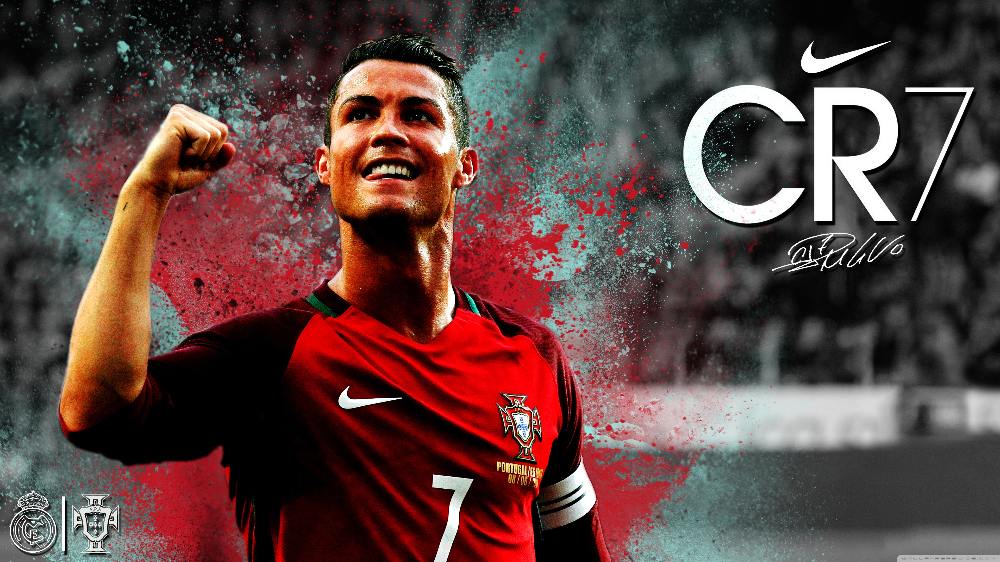
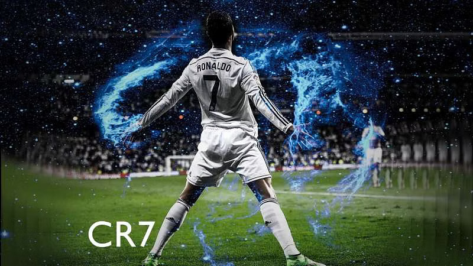
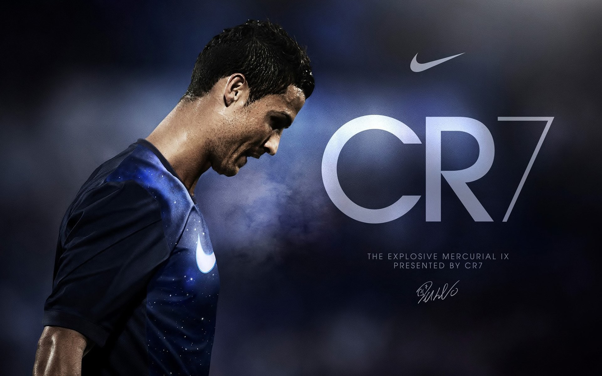
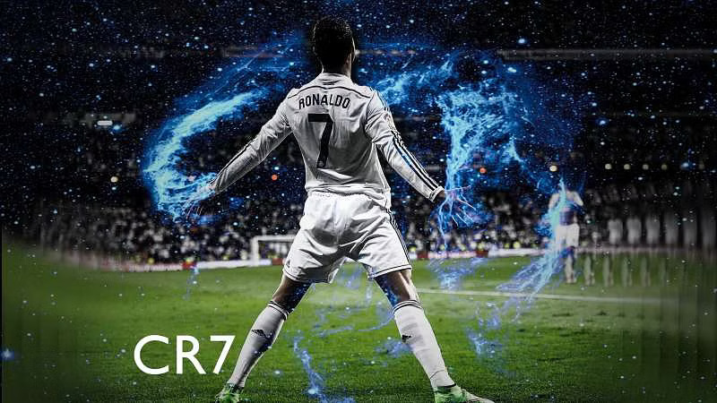
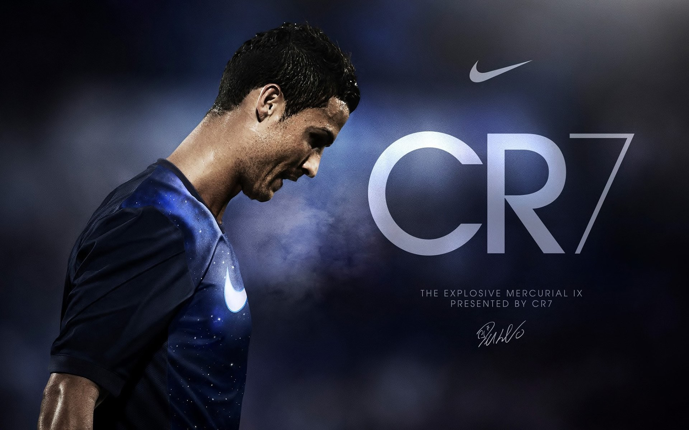

About Cristiano Ronaldo
Cristiano Ronaldo is a Portuguese professional football player and one of the most renowned sports personalities in the world. Cristiano Ronaldo’s birthplace is Funchal, Madeira, Portugal, where he was born on February 5, 1985. Ronaldo began his football career at an early age and joined the Sporting CP academy when he was just 12 years old.He is known for his incredible speed, agility, and precision on the football field. Ronaldo has won numerous awards throughout his career, including five Ballon d’Or trophies, which are awarded to the best football player in the world. He has played for several football clubs, including Sporting CP, Manchester United, Real Madrid, and Juventus. Ronaldo has scored over 700 career goals and is one of the all-time top goal scorers in football history. He is also a philanthropist and has donated millions of dollars to various charitable causes. Ronaldo is widely regarded as one of the greatest football players of all time. His fans admire him not only for his exceptional football skills but also for his work ethic, dedication, and commitment to excellence.
5 Greatest career achievements of Cristiano Ronaldo
Photo
 



Video
Audio
Social Media
Create By POROSH